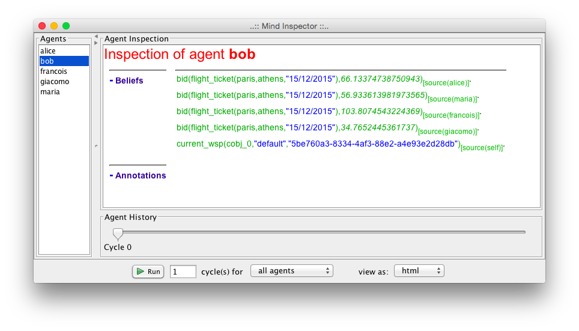
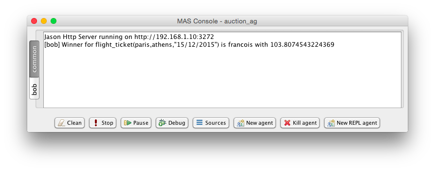
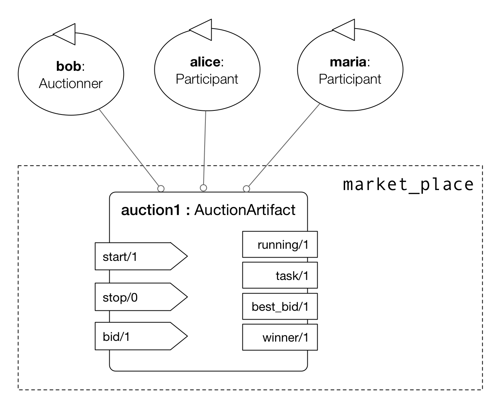
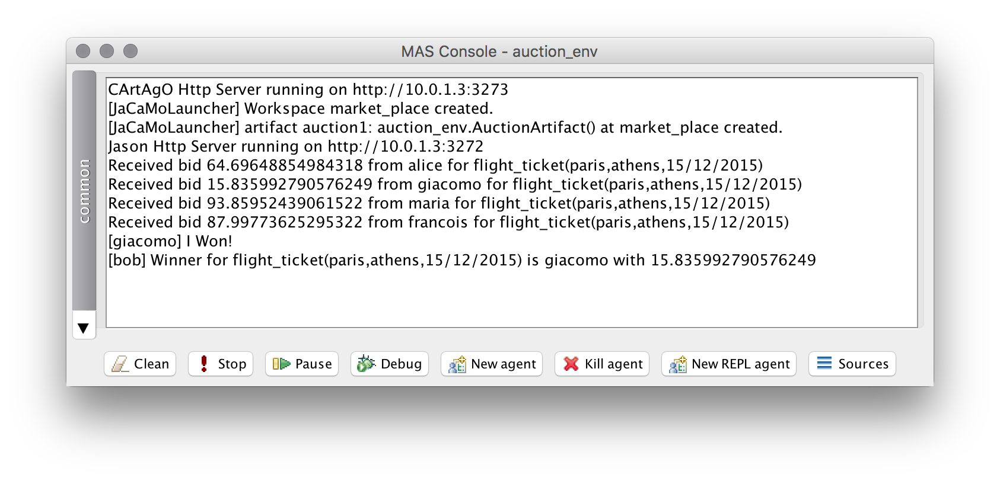
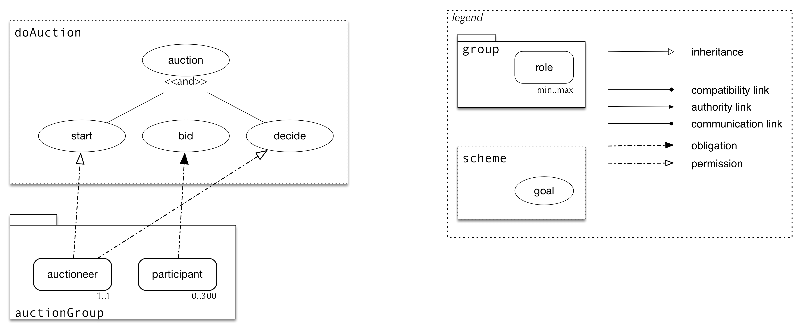
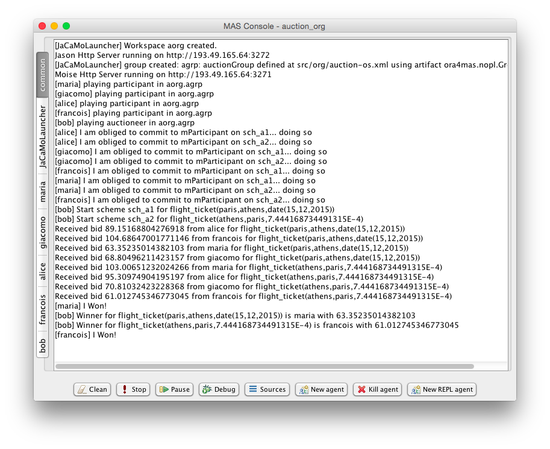
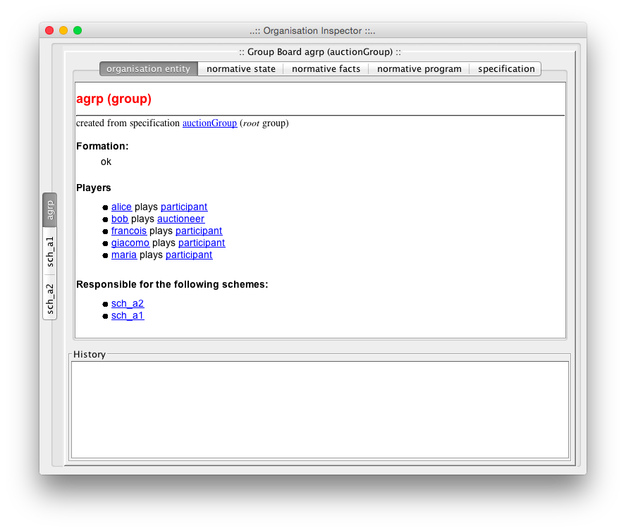
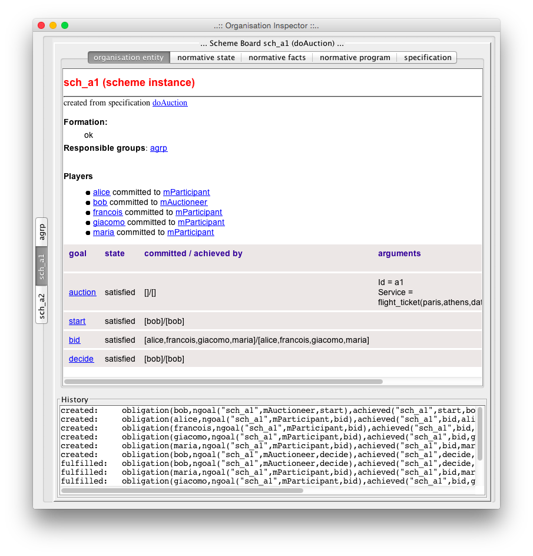
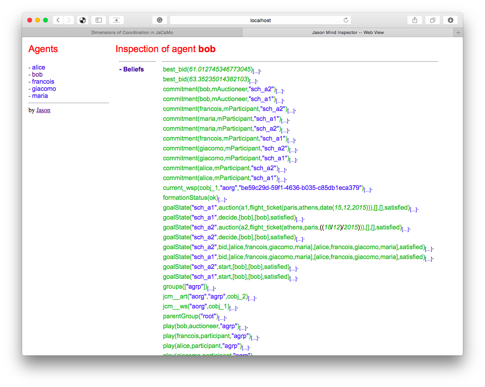
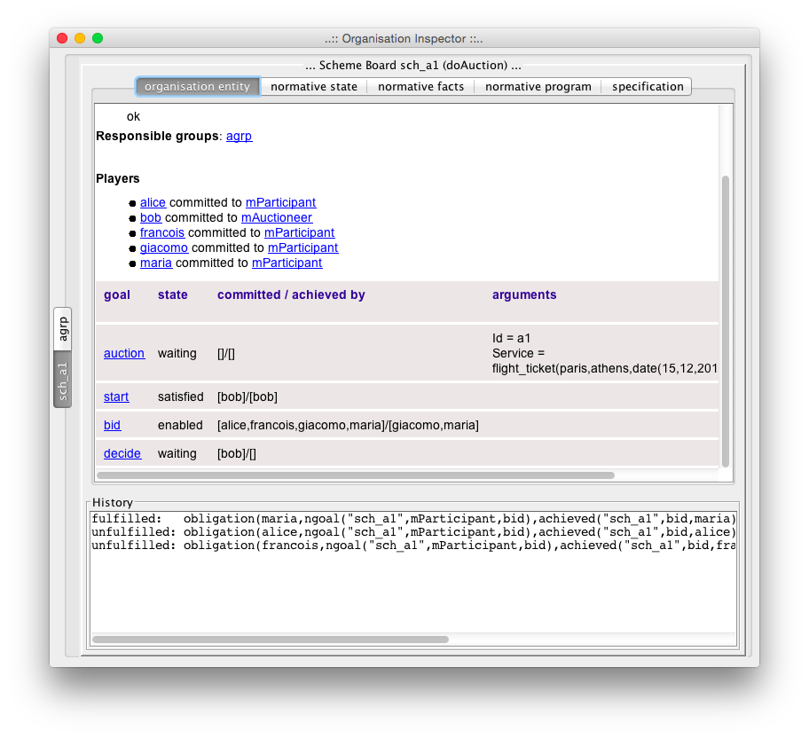

Introduction
This programming tutorial illustrates different approaches to coordinate agents in JaCaMo. Since JaCaMo is a multi-dimensional programming platform, we can develop the coordination part of our system focusing on agent, environment or organisation dimensions. For instance, we can conceive the coordination based on interaction by direct message passing as usual in MAS, we can use the environment as a coordination medium, or declare the coordination strategies within organisation specifications.
During the tutorial we will develop many versions of a simple market place where an agent who wants to buy some product or service, announces its requirements, other agents bid, and the winner is then chosen. We will start with versions based on message exchange (part I), move to versions where a suitable environment is added (part II), and finish with an auction MAS based on organisation programming (part III). Although the coordination requirements for the market place application are quite simple, we can highlight the differences, advantages, limitations, …. of each coordination approach.
We suppose you have already followed some more introductory tutorials as hello world. (The application developed in the hello world tutorial is used in some exercises of this tutorial.)
Part I (message oriented coordination)
The coordination in a market place can follow different protocols, here we will consider a simple auction protocol and its implementation based on message exchanges:
-
An auctioneer broadcasts a message with his requirements,
-
Participants send him back messages with the prices, and
-
The auctioneer broadcasts the winner.
Our first implementation has 5 agents:
-
bob(auctioneer): the agent is interested in buying a flight ticket from Paris to Athens. -
francois,alice,maria, andgiacomo(participants): travel agency agents.
The following steps will implement this system.
1. Create a new JaCaMo project called auction_ag with the following project file content:
1mas auction_ag {
2
3 agent bob: auctioneer.asl
4
5 agent alice : participant.asl
6 agent maria : participant.asl
7 agent francois: participant.asl
8 agent giacomo : participant.asl
9}2. The agent code for the participants is:
1+auction(service, D)[source(A)] <- .send(A,tell,bid(D, math.random * 100 + 10)).
2
3{ include("$jacamo/templates/common-cartago.asl") }
4{ include("$jacamo/templates/common-moise.asl") }
5{ include("$moise/asl/org-obedient.asl") }By this plan, each time the participant gets an event corresponding to
the creation of an auction belief for a service, it sends back a bid
with a random price. Notice that service (after +auction() is not a
variable, so this agent will only respond to auctions for services. The
variable D is bound to the description of the service and variable A
is bound to the source of the perception (Bob in our case). The message
has the format bib( <service description>, <price>).
3. The agent code for bob is
1!start. // initial goal
2
3+!start <- .broadcast(tell, auction(service, flight_ticket(paris,athens,"15/12/2015"))).
4
5+bid(Service, _) // receives bids and checks for new winner
6 : .findall(b(V,A),bid(Service,V)[source(A)],L) & (1)
7 .length(L,4) (2)
8 <- .min(L,b(V,W));
9 .print("Winner for ", Service, " is ",W," with ", V);
10 .broadcast(tell, winner(Service,W)).
11
12
13{ include("$jacamo/templates/common-cartago.asl") }
14{ include("$jacamo/templates/common-moise.asl") }
15{ include("$moise/asl/org-obedient.asl") }| 1 | L is a list of all bids, e.g. [b(77.7,alice), b(91.7,giacomo), …] |
| 2 | all 4 expected bids have been received, announce the winner |
This agent has an initial goal start that is achieved by broadcasting
an auction announcement. The message content has the form
auction(<type>, <description>).
The second plan (that starts with +bid ….) deals with received bids.
Bids are sent to bob by tell messages (see code of participants) and
thus are represented as beliefs in his mind. This can be seen in mind
inspector after the execution (notice the annotation source of the
beliefs):

Each belief addition produces an event like +bid(<service>,<price>)
that is handled by the plan pb1. If the agent has already received 4
bids for this service, the winner is announced. The internal actions
.findall, .length, and .min are described in
Jason API.
4. The execution of the application will look like the following screen:

5. To launch two auctions concurrently, we can simply change the plan
for the goal start to:
+!start
<- .broadcast(tell, auction(service, flight_ticket(paris,athens,"15/12/2015")));
.broadcast(tell, auction(service, flight_ticket(athens,paris,"18/12/2015"))).Notice that plans in bob and participants are triggered by events
(+bid, +auction) and executed concurrently. Participants can
produce bids concurrently. Bob can receive bids concurrently.
Exercises
a) Bob waits for exactly 4 bids! It is far from a good design choice:
(i) the number of participants may be unknown and (ii) some of them may
not respond. Change the program auctioneer.asl so that a decision is
taken after 10 seconds, regardless of the number of bids.
Hint: The internal action
.at can be used
to produce a goal after some time. For example,
.at("now + 10 seconds", { +!decide } ) will create a new goal decide
after 10 seconds.
Solution: available here.
b) Change the code of participants so that they use broadcast to announce their bids (like an auction room).
Solution: available here.
c) In auction room of the previous exercise (b)), agents can listen
the bids done by other agents. Change the code of the agent giacomo so
that as soon as he listens a bid from another agent, he bids the same
service with a better price.
d) Based on the number of running auction a and participants p, how many messages are sent in the broadcast version developed in these exercises?
Solution: available here.
(All the code of the project for this part of the tutorial is available here.)
f) (hard) Develop a system where different agents propose different kinds of services, where some agents are interested in buying one set of services, other agents are interested in buying a different set of services. Use the Jade directory facilitator service to implement this matching between services and agents so that agents can directly announce auctions to the interested agents instead of broadcasting to all.
g) (hard) Add a Jade agent that plays participant in the MAS developed so far so that the system has Jason and Jade agents.
h) (hard) Implement a version of the MAS as proposed in the JaCaMo hello world tutorial where the coordination required to print "hello world!" is implemented by message exchanges instead of an organisation. Considers two approaches:
-
with a new coordinator agent that allocates subtasks to agents accordingly,
-
without a centralised coordinator (keeping the same set of agents as in the hello world tutorial).
Part II (environment oriented coordination)
Instead of using message exchanges among the agents, in this part of the tutorial we will enrich the agents' environment with artifacts that will help the coordination required for the market place auction protocol. The speech acts will be replaced by a simpler form of interaction: perception and action. Instead of implementing the auction protocol within the agents' code as done in the previous part, we will externalise and encapsulate the coordination mechanism within an auction artifact shared between the agents. Thanks to the abstractions provided in JaCaMo we can also situate this artifact in a workspace, duplicate it, and control its access.
Each auction is managed by one artifact instance where:
-
The auctioneer starts the auction setting the service description,
-
The participants perceive the service and likely do their bids,
-
After some time, the auctioneer stops the auction and the winner is defined.
This auction artifact has the following observable properties:
-
the service (or task) description,
-
the current best bid,
-
the current winner (shown only when the auction has finished),
-
whether the auction is running or not,
and the following operations:
-
start(task_description),
-
stop, and
-
bid(value).
The specification of this artifact is depicted below.

The following steps will implement this MAS.
1. Create a new JaCaMo project called auction_env (for now, leave
the default configuration in the .jcm file) and create also a new
artifact, called AuctionArtifact (select src/env, menu
File → New → CArtAgO Artifact). Replace the Java code of the artifact by:
package auction_env;
import jason.asSyntax.Atom;
import cartago.*;
public class AuctionArtifact extends Artifact {
String currentWinner = "no_winner";
public void init() {
// observable properties
defineObsProperty("running", "no");
defineObsProperty("best_bid", Double.MAX_VALUE);
defineObsProperty("winner", new Atom(currentWinner)); // Atom is a Jason type
}
@OPERATION public void start(String task) {
if (getObsProperty("running").stringValue().equals("yes"))
failed("The protocol is already running and so you cannot start it!");
defineObsProperty("task", task);
getObsProperty("running").updateValue("yes");
}
@OPERATION public void stop() {
if (! getObsProperty("running").stringValue().equals("yes"))
failed("The protocol is not running, why to stop it?!");
getObsProperty("running").updateValue("no");
getObsProperty("winner").updateValue(new Atom(currentWinner));
}
@OPERATION public void bid(double bidValue) {
if (getObsProperty("running").stringValue().equals("no"))
failed("You can not bid for this auction, it is not running!");
ObsProperty opCurrentValue = getObsProperty("best_bid");
if (bidValue < opCurrentValue.doubleValue()) { // the bid is better than the previous
opCurrentValue.updateValue(bidValue);
currentWinner = getCurrentOpAgentId().getAgentName(); // the name of the agent doing this operation
}
System.out.println("Received bid "+bidValue+" from "+getCurrentOpAgentId().getAgentName()+" for "+getObsProperty("task").stringValue());
}
}2. In the project file, create a workspace with an instance of the above artifact and the same agents as before:
mas auction_env {
agent bob : auctioneer.asl
agent alice : participant.asl
agent maria : participant.asl
agent francois: participant.asl
agent giacomo : participant.asl
workspace market_place {
artifact auction1 : auction_env.AuctionArtifact() {
focused-by: bob, alice, maria, francois, giacomo
}
}
}3. The code of the auctioneer.asl is:
!start. // initial goal
+!start
<- start("flight_ticket(paris,athens,15/12/2015)");
.at("now + 10 seconds", {+!decide}).
+!decide
<- stop.
+winner(W) : W \== no_winner
<- ?task(S);
?best_bid(V);
.print("Winner for ", S, " is ",W," with ", V).
{ include("$jacamo/templates/common-cartago.asl") }
{ include("$jacamo/templates/common-moise.asl") }
{ include("$moise/asl/org-obedient.asl") }and the participant.asl is:
+task(D) : running("yes") <- bid(math.random * 100 + 10).
+winner(W) : .my_name(W) <- .print("I Won!").
{ include("$jacamo/templates/common-cartago.asl") }
{ include("$jacamo/templates/common-moise.asl") }
{ include("$moise/asl/org-obedient.asl") }Notice that operations and observable properties of the
AuctionArtifact are mapped respectively to agents' actions and
beliefs.
4. The execution should produce a similar result as the message based version:

5. The above solution lacks some flexibility, since the number of
auction artifacts is pre-defined in the .jcm file. We will change it
so that Bob will create the artifacts on demand.
Change the workspace definition as follows:
1/*
2
3 JaCaMo Project File
4
5 Auction example using Environment (AuctionArtifact)
6
7*/
8
9mas auction_env {
10
11 agent bob : auctioneer.asl {
12 goals: start(a1,"flight_ticket(paris,athens,15/12/2015)")
13 start(a2,"flight_ticket(athens,paris,18/12/2015)")
14 }
15
16 agent alice : participant.asl
17 agent maria : participant.asl
18 agent francois: participant.asl
19 agent giacomo : participant.asl
20
21 workspace market_place {
22 agents: bob, alice, maria, francois, giacomo // these agents will join the workspace
23
24 /* // the artifact is now created by bob on demand (one for each start goal)
25 artifact auction1 : auction_env.AuctionArtifact() {
26 focused-by: bob, alice, maria, francois, giacomo
27 }
28 */
29 }
30
31 //platform: jade()
32}so that the artifact is no more created when the application is started.
The artifact will be created by Bob in its new start plan:
+!start(Id,P)
<- makeArtifact(Id, "auction_env.AuctionArtifact", [], ArtId);
.print("Auction artifact created for ",P);
Id::focus(ArtId); // place observable properties of this auction in a particular name space
Id::start(P);
.broadcast(achieve,focus(Id)); // ask all others to focus on this new artifact
//.at("now + 5 seconds", {+!decide(Id)}).
!decide(Id).
//+!decide(Id)
// <- Id::stop.
// update the time when the last bid was perceived
+NS::best_bid(V)
<- -+NS::last_bid_time(system.time).
// stops the auction if we have 5secconds of "silence" in the room
+!decide(Id)
: Id::last_bid_time(L) & system.time - L > 5000
<- Id::stop.
+!decide(Id)
<- .wait(500); !decide(Id).
+NS::winner(W) : W \== no_winner
<- ?NS::task(S);
?NS::best_bid(V);
.print("Winner for ", S, " is ",W," with ", V).
{ include("$jacamo/templates/common-cartago.asl") }
{ include("$jacamo/templates/common-moise.asl") }
{ include("$moise/asl/org-obedient.asl") }The participants programs is now:
+!focus(A) // goal sent by the auctioneer
<- lookupArtifact(A,ToolId);
focus(ToolId).
+task(D)[artifact_id(AId)] : running("yes")[artifact_id(AId)]
<- bid(math.random * 100 + 10)[artifact_id(AId)].
+winner(W) : .my_name(W) <- .print("I Won!").
{ include("$jacamo/templates/common-cartago.asl") }
{ include("$jacamo/templates/common-moise.asl") }
{ include("$moise/asl/org-obedient.asl") }Exercises
a) What is the main difference between the implementations of part I and II of this tutorial?
b) Run two sequential auctions using the same a1 artifact.
c) (hard) Run two parallel auctions.
Hint: Annotations could be used to discover from which artifact the information is coming. For instance
+task(D)[artifact_id(AId)] : running("yes")[artifact_id(AId)]
<- bid(math.random * 100 + 10)[artifact_id(AId)].will ensure that the bid action will be done in the same artifact where the task was perceived.
Solution: all the code of the project for this part of the tutorial is available here.
d) Change the auction protocol so that the bids are perceived by the participants. In general, if we need to change the protocol, which part of the MAS implementation should we change?
e) (hard) Develop an artifact that works as a kind of yellow pages for the system.
f) (hard ) Implement a version of the MAS as proposed in the JaCaMo
hello world
tutorial where the
coordination required to properly print "hello world!" is implemented by
means of the environment (without organisation, but keeping the
GUIConsole artifact).
Part III (organisation oriented coordination)
In this part of the tutorial we use an organisation specification to
coordinate the agents interacting all together in the environment using
the auction artifact as interaction medium for bidding in a market
place. The coordination strategy is specified through a normative
organisation composed of only one group type (identified as
auctionGroup) in which two roles can be played by agents:
-
auctioneer and
-
participant.
For this group to be well formed (and then be responsible for a scheme),
at least one agent must play the auctioneer role. The goals to be
achieved under this structure are specified within a social scheme
(identified as doAuction). They are:
-
start: starting the auction process, -
bid: proposing a bid, -
decide: deciding who is the winner of the auction.
These goals should be achieved exactly in the order they are presented above, i.e. the decision should be taken after the bids that should be proposed after the start.
Finally the normative specification declares the set of duties and permissions that agents will have to fulfil while playing some roles in the group. The norms are the following:
-
auctioneersare permitted to achievestartanddecide, -
participantsare obliged to achievebid.
The goals start and decide are thus part of the same mission mAutioneer, and bid is part of the mission mParticipant. This specification is depicted below in the Moise notation.

The following steps will implement this MAS.
1. In Eclipse, copy the project auction_env into a new project
called auction_org and create an organisation, called auction-os.xml
(select src/org, menu File → New → Moise Organization). Replace the XML
code by:
<?xml version="1.0" encoding="UTF-8"?>
<?xml-stylesheet href="https://moise-lang.github.io/xml/os.xsl" type="text/xsl" ?>
<organisational-specification
id="auction"
os-version="1.1"
xmlns='http://moise.sourceforge.net/os'
xmlns:xsi='http://www.w3.org/2001/XMLSchema-instance'
xsi:schemaLocation='http://moise.sourceforge.net/os
https://moise-lang.github.io/xml/os.xsd' >
<structural-specification>
<group-specification id="auctionGroup">
<roles>
<role id="auctioneer" min="1" max="1"/>
<role id="participant" min="0" max="300"/>
</roles>
</group-specification>
</structural-specification>
<functional-specification>
<scheme id="doAuction">
<goal id="auction">
<argument id="Id" />
<argument id="Service" />
<plan operator="sequence">
<goal id="start" />
<goal id="bid" ttf="10 seconds" />
<goal id="decide" ttf="1 hour" />
</plan>
</goal>
<mission id="mAuctioneer" min="1" max="1">
<goal id="start" />
<goal id="decide" />
</mission>
<mission id="mParticipant" min="1" >
<goal id="bid" />
</mission>
</scheme>
</functional-specification>
<normative-specification>
<norm id="n1" type="permission" role="auctioneer" mission="mAuctioneer" />
<norm id="n2" type="obligation" role="participant" mission="mParticipant" />
</normative-specification>
</organisational-specification>Notes:
-
The goals
start,bidanddecideare defined as sub-goals of the goalauction. -
The
auctiongoal has two arguments: the auction identification and its description. -
Some goals have a deadline (
ttf= time to fulfil).
2. Rename the file auction_env.jcm to auction_org.jcm and edit it
so that one instance of the auctionGroup is created:
mas auction_org {
agent bob : auctioneer.asl
agent alice : participant.asl
agent maria : participant.asl
agent francois: participant.asl
agent giacomo : participant.asl
organisation aorg : auction-os.xml {
group agrp : auctionGroup {
players: bob auctioneer
alice participant
maria participant
francois participant
giacomo participant
}
}
}Notice that no social scheme is created in the .jcm project, they will
be created by Bob at runtime whenever he wants to start an auction. One
scheme instance will be created for each running auction and all these
schemes are under the responsibility of the same group instance, i.e.
the one created from the .jcm project. (Of course other configurations
are possible. For example, we can have one group instance for each
scheme instance. We leave this alternative solution as an exercise.)
3. The behaviour of Bob (file auctioneer.asl) needs to be changed to
consider the organisation.
-
To start an auction, Bob will instantiate a scheme and commit to the mission
mAuctioneerthere. -
Plans for the organisational goals
startanddecidehave to be included. These plans are quite similar to the previous plans.
!do_auction("a1","flight_ticket(paris,athens,date(15,12,2015))"). // initial goals
!do_auction("a2","flight_ticket(athens,paris,18/12/2015)").
+!do_auction(Id,P)
<- // creates a scheme to coordinate the auction
.concat("sch_",Id,SchName);
createScheme(SchName, doAuction, SchArtId);
//debug(inspector_gui(on))[artifact_id(SchArtId)];
setArgumentValue(auction,"Id",Id)[artifact_id(SchArtId)];
setArgumentValue(auction,"Service",P)[artifact_id(SchArtId)];
.my_name(Me); setOwner(Me)[artifact_id(SchArtId)]; // I am the owner of this scheme!
focus(SchArtId);
addScheme(SchName); // set the group as responsible for the scheme
commitMission(mAuctioneer)[artifact_id(SchArtId)].
/* plans for organizational goals */
+!start[scheme(Sch)] // plan for the goal start defined in the scheme
<- ?goalArgument(Sch,auction,"Id",Id); // retrieve auction Id and service description S
?goalArgument(Sch,auction,"Service",S);
.print("Start scheme ",Sch," for ",S);
makeArtifact(Id, "auction_env.AuctionArtifact", [], ArtId); // create the auction artifact
Sch::focus(ArtId); // place observable properties of ArtId into a name space
// .broadcast(achieve,focus(Id)); (1)
Sch::start(S);
//.at("now + 4 seconds", {+!decide(Id)}); (2)
.
+!decide[scheme(Sch)]
<- Sch::stop.
+NS::winner(W) : W \== no_winner
<- ?NS::task(S);
?NS::best_bid(V);
.print("Winner for ", S, " is ",W," with ", V).
+oblUnfulfilled( obligation(Ag,_,done(Sch,bid,Ag),_ ) )[artifact_id(AId)] // it is the case that a bid was not achieved
<- .print("Participant ",Ag," didn't bid on time! S/he will be placed in a blocklist");
// TODO: implement a block list artifact
admCommand("goalSatisfied(bid)")[artifact_id(AId)].
{ include("$jacamo/templates/common-cartago.asl") }
{ include("$jacamo/templates/common-moise.asl") }
{ include("$moise/asl/org-obedient.asl") }| 1 | No need to broadcast the focus to the agents, the organisation will signal the participants about their goals. |
| 2 | We do not need create the goal decide anymore, it is now a goal in the organisational scheme. |
While the plan for the event winner(W)` is the same as in the
environment oriented coordination (Part II), the plans for `!start and
!decide` were changed. The coordination implied by the broadcast
`(*1*)` and the `.at( ... decide...)` `(*2*)` are not necessary anymore.
The organisation monitoring facilities of the JaCaMo platform will
signal to the agents about their goals at the moment they should achieve
them. So the participants will have an event `!bid when they should
bid (i.e. as soon as the goal start is satisfied), when all of them
have bid, the event +!decide is created for Bob (because of his roles
and missions).
| The phases of the auction protocol are not controlled by Bob anymore! The organisation takes care of it. Changes on protocol, should be done in the organisation specification, and not in the code of the agents. |
The program of the participants also need to be changed to achieve organisational goals:
+!bid[scheme(Sch)]
<- ?goalArgument(Sch,auction,"Id",Id);
lookupArtifact(Id,ArtId);
focus(ArtId);
.wait( (math.random * 5+1)*1000); // to simulate some "decision" reasoning
bid(math.random * 100 + 10)[artifact_id(ArtId)].
+winner(W) : .my_name(W) <- .print("I Won!").
{ include("$jacamo/templates/common-cartago.asl") }
{ include("$jacamo/templates/common-moise.asl") }
{ include("$moise/asl/org-obedient.asl") }4. The execution output is:



It is also interesting to inspect the mind of the agents to see the
beliefs produced by the organisational artifacts (specially the belief
goalState used in the .asl programs). (The complete description of
the observable properties of organisational artifacts are found
here — follow the links
Group and Scheme API.)

5. Now that we have a first version of the coordination of the market place running, we will start to change it taking profit of its declarative nature and organisational abstractions.
Suppose that Bob wants to take a decision as soon as the auction has two
bids, he does not want to wait for all participants. To implement this,
we can simply change the cardinality of the goal bid in the social
scheme definition of the organisational specification (file
auction_os.xml):
<goal id="bid" ttf="10 seconds" min="2"/>
6. We can also exploit how to monitor and regulate the agents
behaviour taking profit of the normative dimension of the organisation.
Let’s consider that some participants do not bid (even if they are
obliged to do so). To simulate that, the program participant.asl can
be changed to:
+!bid[scheme(Sch)]
<- ?goalArgument(Sch,auction,"Id",Id); // retrieve auction id and focus on the artifact
lookupArtifact(Id,AId);
focus(AId);
if (math.random < 0.5) { // bid in 50% of the cases
.wait(math.random * 2000 + 500); // to simulate some "decision" reasoning
bid(math.random * 100 + 10)[artifact_id(AId)];
} else {
.fail; // fail otherwise
}.
-!bid[error(ia_failed)] <- .print("I didn't bid!").
-!bid[error_msg(M)] <- .print("Error bidding: ",M).
+winner(W) : .my_name(W) <- .print("I Won!").
{ include("$jacamo/templates/common-cartago.asl") }
{ include("$jacamo/templates/common-moise.asl") }
{ include("$moise/asl/org-obedient.asl") }And remove the min=2 in goal bid (file auction_os.xml).
In the execution, the scheme does not progress to the decide phase,
since the organisation is waiting for the bids (the goal bid is
enabled and the goal decide is waiting):

Hence the goal bid has a deadline, after 10 seconds the organisation
informs the agents that some obligations was not fulfilled (see the
inferior part of the above screen). Bob can react to these events
putting those agents in a black list (not implemented here) and setting
the goal bid as satisfied anyway. The following plan will do that for
Bob:
+oblUnfulfilled( obligation(Ag,_,done(Sch,bid,Ag),_ ) )[artifact_id(AId)] (1)
<- .print("Participant ",Ag," didn't bid on time! S/he will be placed in a blacklist");
// TODO: implement a black list artifact
admCommand("goalSatisfied(bid)")[artifact_id(AId)].| 1 | it is the case that a bid was not achieved |
The code of the project for this part of the tutorial is available here.
Exercises
a) Implement an agent that bids and then tries to achieve the goal
decide — violating thus the auction protocol. What happens?
Hint: the action goalAchieved(decide)[artifact_name(Sch)] informs
the organisation scheme (identified by the variable Sch) that the goal
decide was achieved by the agent performing the action.
Solution: available here.
b) Implement an agent that tries to commit to both missions. Explain the result of the execution.
Solution: available here.
c) Implement an agent that tries to adopt both roles. Explain the result of the execution.
Solution: available here.
d) Use the same source code (the .asl file) for all agents of the
system. Their goals should be defined either by the organisation or the
project file.
Hint: initial goals can be given to agents in the project as follows:
agent bob : auctioneer.asl {
goals: do_auction("a1","flight_ticket(paris,athens,date(15,12,2015))")
do_auction("a2","flight_ticket(athens,paris,18/12/2015)")
}Hint: if a plan should be executed only the auctioneer, the context of the plan can be used, as in the following example:
+oblUnfulfilled( obligation(Ag,_,achieved(Sch,bid,Ag),_ ) )[artifact_id(AId)]
: .my_name(Me) & play(Me,auctioneer,_) // handle unfulfilled obl if I am the auctioneer
...Solution: agent program, project file.
e) Implement the black list artifact for the step 6.
f) Keeping the organisation, replace the auction artifact by messages, as used in the part I of this tutorial.
g) Evaluate the different solutions for the auction protocol considering
-
open system, where the set of agents is unknown at design time,
-
centralisation, and
-
performance.
Some ideas: here.